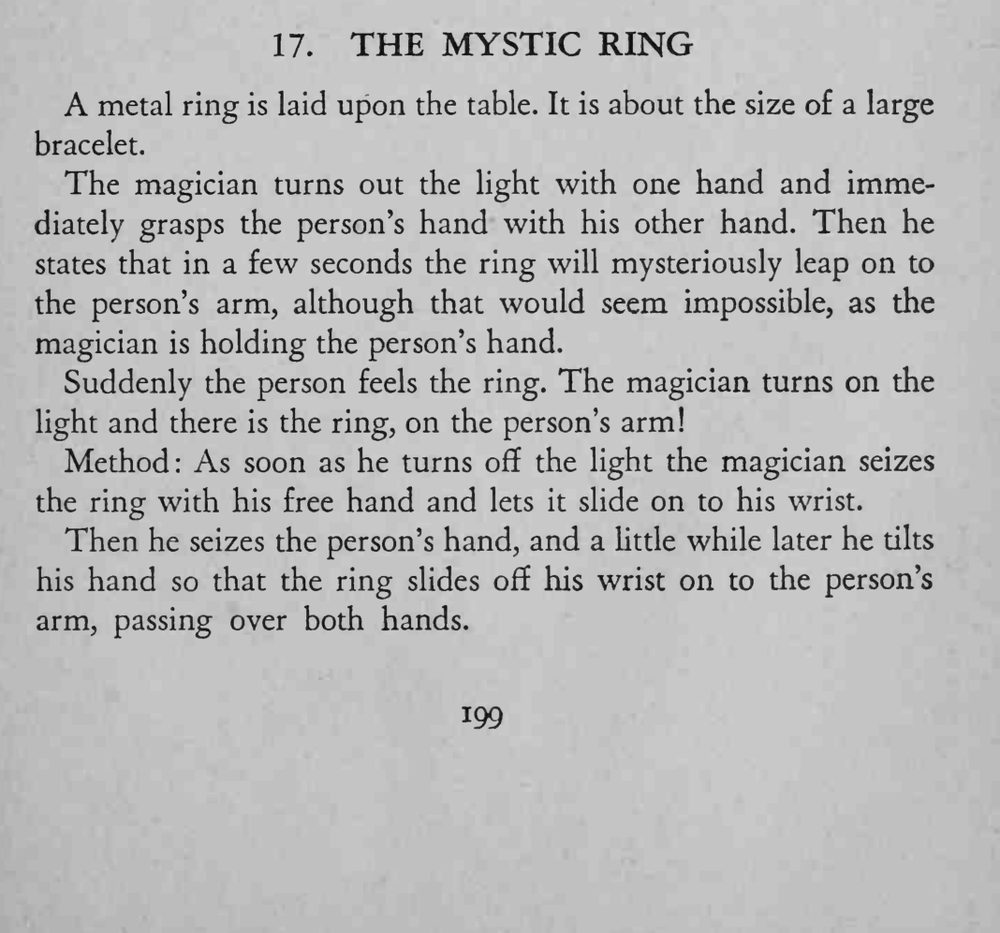

灯一灭，被握着手的那位观众忽然感觉铁环落到自己手臂上；灯亮时铁环真的套在他腕上。
关灯后动作要快，滑环时两手要贴紧，别让环掉在地上。

A metal ring is laid upon the table. It is about the size of a large bracelet. The magician turns out the light with one hand and immediately grasps the person's hand with his other hand. Then he states that in a few seconds the ring will mysteriously leap on to the person's arm, although that would seem impossible, as the magician is holding the person's hand. Suddenly the person feels the ring. The magician turns on the light and there is the ring, on the person's arm! Method: As soon as he turns ofif the light the magician seizes the ring with his free hand and lets it slide on to his wrist. Then he seizes the person's hand, and a little while later he tilts his hand so that the ring slides off his wrist on to the person's arm, passing over both hands.